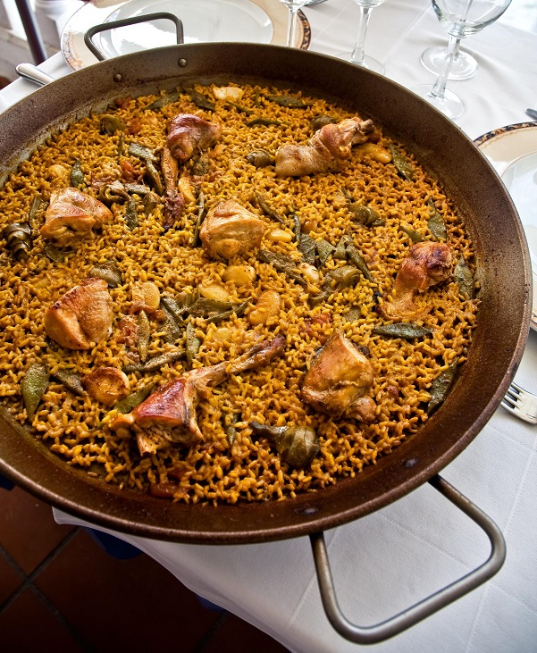

Les millors receptes
Cuina casolana i tradició
Detalls de ingredients
| Ingredient |
Quantitat |
| Arròs |
400 g |
| Pollastre |
500 g |
| Tomàquet |
200 g |
| Oli d'oliva |
100 ml |

Paella de pollastre amb tomàquet
Passos de preparació
- Sofregir el pollastre.
- Afegir el tomàquet.
- Incorporar l'arròs i el brou.
Més receptes